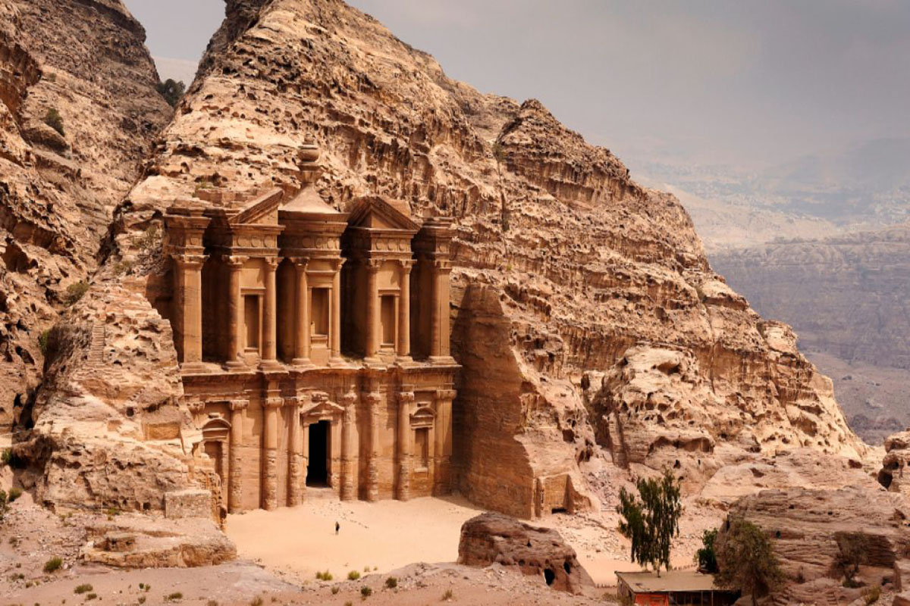

Petra
Petra to starożytne miasto położone w Jordanii, które zachwyca monumentalnymi budowlami wyrzeźbionymi w piaskowcowych skałach. Znana głównie ze spektakularnego Skarbca Al-Khazneh, stanowiła ona niegdyś stolicę Nabatejczyków. To miejsce związane z bogatym dziedzictwem kulturowym i handlowym, gdzie zaawansowane systemy nawadniające i handel przyprawami i zbożem były nieodłącznymi elementami życia. Petra, wpisana na Listę Światowego Dziedzictwa UNESCO, do dziś przyciąga uwagę turystów swoją niezwykłą architekturą i historią.
Powrót do Menu
